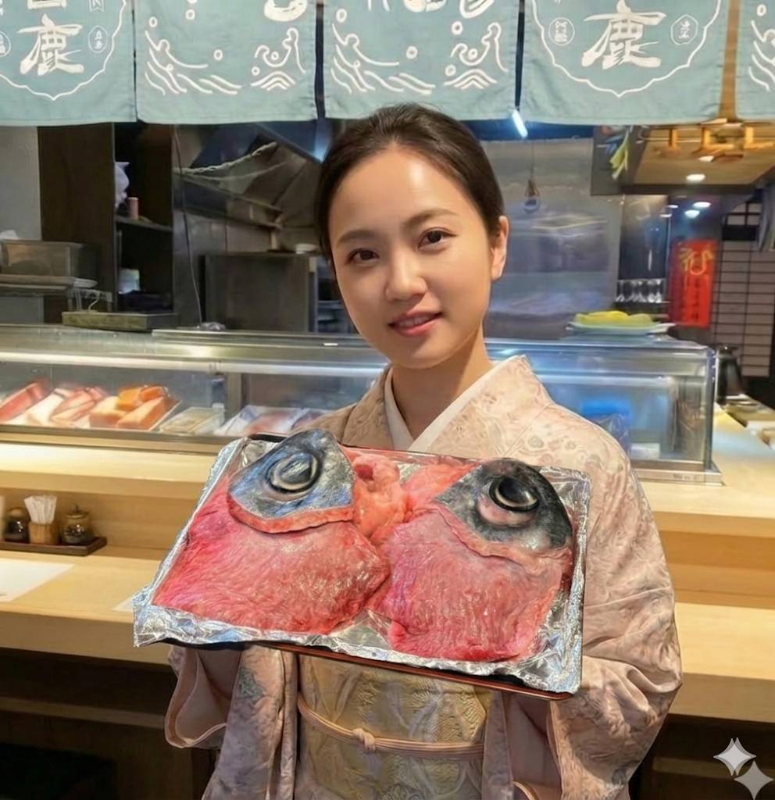

吉松和汉日本料理坚持使用新鲜食材，提供地道的日式料理体验。无论是精致的刺身拼盘、香气四溢的炙烧寿司，还是温暖入心的黑鲔鱼骨髓汤，都能让您品尝到最正宗的日式美味。
我们拥有舒适的用餐环境和包厢服务，适合家庭聚餐、朋友聚会或商务宴请。期待您的光临！
吉松和汉日本料理深耕台北多年，秉持「新鲜、地道、用心」的理念，每一道料理都由资深师傅现点现做，选用当日新鲜渔获与优质食材，让顾客品尝到最原汁原味的日式料理。
